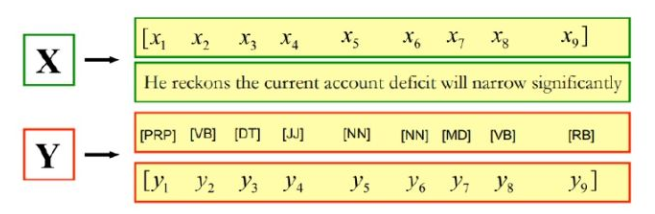
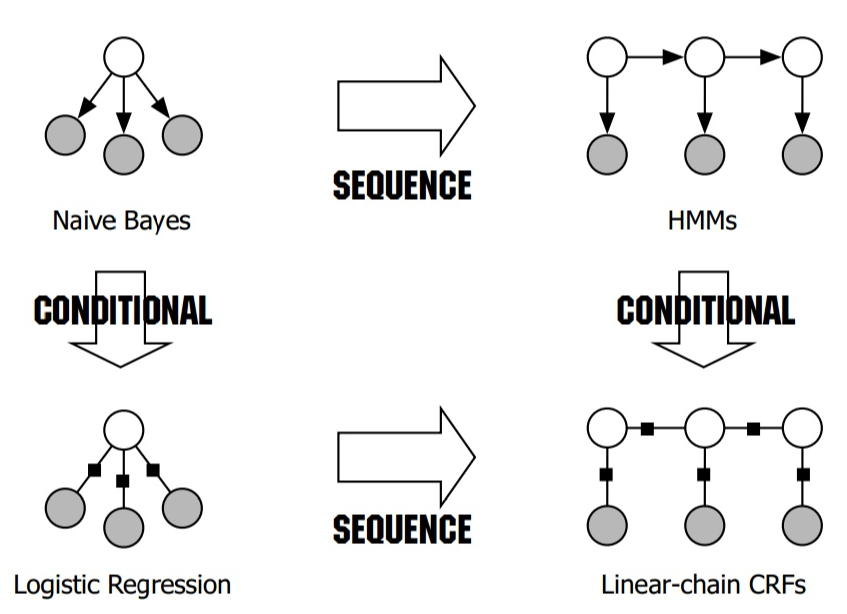
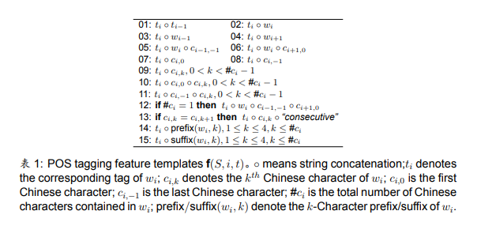
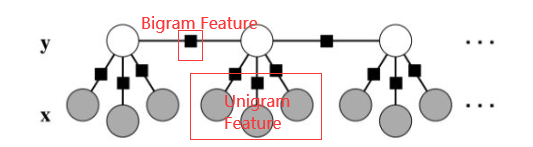
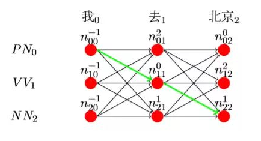

前言
本文是我在学习苏州大学李正华老师的中文信息处理课程（中文信息处理（Chinese Information Processing）Course Resources）时，对于条件随机场模型（Condition Random Field Model）的一些个人见解和思考，同时参考了一些书籍和网上的资料编写而成。写这篇文章的主要目的是加深自己对于该模型的理解，如有错误欢迎在评论区指出，非常感谢！
从问题出发
与之前的讲解类似，我们在这里依旧围绕自然语言处理中的经典问题词性标注问题进行讨论和解释。
- 给定一个句子X，输出句子中每一个单词对应的词性。

条件随机场模型的由来
我在之前已经讨论过了隐马尔可夫模型（HMM）和对数线性模型（Log-Linear Model），我觉得，有了之前的过程基础，我们接下来对于条件随机场模型的学习将变得非常轻松，因为实际上条件随机场模型只是隐马尔可夫模型和对数线性模型的结合。当我们打好了基础，剩下来的只有细微的调整和修补。
首先，我们来看下面这张图，它阐述了我们要学习的条件随机场模型和之前的两个模型的关系。顺便说一下，本文讨论的条件随机场模型都是线性链条件随机场（ Linear-chain CRF），这是NLP中常用的CRF形式，此外还有全连接条件随机场（Generl Graph CRF），一般用在CV中，这里就不多叙述。

这张图将三者的关系描述的很清楚。你可以这样去理解LC-CRF的由来：
- LC-CRF可以看作是分类模型Log-Linear Model加入了HMM中的转移特征（齐次马尔可夫假设）从而转变成为的结构化分类模型，从而可以进行Seq2Seq的标注。也就是说，对于样本的预测不再是相互独立的，对于某个样本的预测需要考虑前面（Forward）或者后面（Backward）样本预测的结果。
- LC-CRF也可以看作是生成模型HMM中引入了Log-Linear Model中的自定义特征函数，把它变成了一个判别模型，解决了HMM的输出独立性假设问题和有限元马尔可夫假设问题， 不仅可以表达观测之间的依赖，还可表示当前观测与前后多个状态之间的复杂依赖。
LC-CRF本质上结合了HMM和Log-Linear Model的优点，从而效果更好，更加强大。也就是说，LC-CRF是Log-Linear Model的序列扩展，是Global Log-Linear Model！
其实介绍到这里，我觉得CRF已经没有多少要说得了，如果你深入地理解了对数线性模型和隐马尔可夫模型，那么CRF的训练和预测过程你一定能够轻松学会。
LC-CRF的训练
LC-CRF是一个判别模型，所以它的训练过程和Log-Linear Model非常类似。
构建特征空间
与Log-Linear Model类似，首先，我们需要为LC-CRF构建特征空间（Feature Space）。构建特征空间的方法也与之前类似，我们采用预先定义好的特征模板（Feature Template）对训练集中的每一个词进行特征抽取。这里，我们使用如下的特征模板：

你可能会发现：02-15号特征和我们之前在Log-Linear Model中定义的特征模板是一致。这些特征我们称之为Unigram特征，也就是一元特征，包含了词特征、字特征，例如当前词是什么，上一个词是什么，当前词的前缀后缀等。它考虑的是当前词的特征信息，也就是说只考虑了一元隐状态。
需要特别注意，我们新加入了01号特征，考虑了当前词性和上一个词性的关系（二元隐状态），这称为Bigram特征，也就是二元特征。正是因为有了二元特征，我们才可以考虑不同时间步输出之间的关系，将Log-Linear Model序列化，并且使用Viterbi算法进行全局动态规划解码。二元特征的定义符合了HMM中的一阶马尔可夫假设，其实就是HMM模型中的状态转移矩阵。下面这张图简单地描述了Unigram特征和Bigram特征。

与Log-Linear Model类似，这里的特征使用One-hot表示，特征抽取可以进行“段+偏移”优化。具体细节可以参考我的对数线性模型博客。
定义假设函数
LC-CRF与Log-Linear Model的假设函数并不相同，因为它是序列模型，所以输出的是预测的整个序列的概率。
我们先定义一个长度为$n$的句子$S$标注为词性序列$Y$的分值为：
$$
Score(S,Y)=\sum_{i=1}^{n}w_i^T x_i
$$
其中，$w_i$是这个句子第$i$个词的特征权重向量，$x_i$是它的特征向量。这里它们都是列向量，需要对$w_i$进行转置处理，然后进行矩阵相乘。将所有词的分值进行相加，得到的是整个句子的总分。
如果我们对这个句子的所有可能的词性序列求解最大分值，并将最大分值的词性序列作为当前句子的标注结果，你会发现这种做法其实也是Work的。这其实就是将我们之前提到的Linear Model的全局化，也就是Global Linear Model。有关线性模型的更多知识可以参考我的上一篇博客，训练的方法依然可以使用我们在Linear Model的在线学习法。
为了将Global Linear Model转化为Global Log-Linear Model，也就是我们的LC-CRF模型，我们还需要对所得的分值Score进行Softmax函数运算，从而将所得的分值归一化为概率Probability。从线性模型到对数线性模型的转化也可以看我的上一篇博客。这里，我们使用Softmax函数，得到长度为$n$的句子$S$标注为词性序列$Y$的条件概率，也就是我们模型的假设函数为：
$$
P(Y|S)=\frac{e^{Score(S,Y)}}{\sum_{Y^{‘}\in{T^n}}e^{Score(S,Y^{‘})}}
$$
其中，$T^n$为当前句子所有可能的词性标注序列集合。可以看到，我们使用一个Softmax指数模型来表示整个标签序列的联合概率, 这个概率条件依赖于给定的完整观察序列。 这是一种全局归一化的方式。
特别地，HMM模型和Log-Linear Model的结合其实还有另外一种方式，即最大熵隐马尔可夫模型（MEMM），这个模型和LC-CRF非常类似，唯一的区别在于，它的概率归一化的时刻在于每一个时间步（Local归一化），而LC-CRF的概率归一化时刻在整个序列计算完成后（全局归一化）。虽然MEMM也是Work的，但它存在着标注偏置的缺陷，导致其无法在维特比算法的解码过程中确保全局最优。具体为什么会这样，可以看这篇博客，我就不过多的进行说明。
参数训练
与Log-Linear Model一样，我们对于LC-CRF的参数拟合依然是可以通过梯度下降法进行的。这里，我们选用交叉熵损失函数作为优化的目标函数，从最大熵模型和极大似然估计法推导出交叉熵损失函数的过程可以参考我的上一篇博客。
各权重梯度的求解需要使用到前向后向算法的合作，具体计算过程的推导大家可以参考李老师的讲义，这里就不进行叙述了，可以自己动手推导一遍。特别注意的是，当你对Softmax的交叉熵损失函数求$w_i$的梯度时，条件概率$P(Y|S)$的分母上也含有$w_i$，不能忘记求偏导，这导致我一开始怎么也无法推导出正确的梯度。
至于梯度下降过程中的细节，如正则化、学习率下降等，均在我的上一篇博客中有说明。大家可以动手自己实践一下，仅需要在Log-Linear Model的基础上进行一些修改即可。
LC-CRF的预测
LC-CRF跟HMM一样，一般预测用的都是维特比（Viterbi）算法。这个算法是一个简单的动态规划，在我的HMM博客有详细的说明。
需要注意的是，LC-CRF是全局归一化，即分值和概率的转化放在最后一步进行，所以在维特比算法的动态规划状态矩阵中计算的是当前词性序列的累计得分，使用的是累加。而在HMM中，状态矩阵中计算的是概率，使用的是发射概率和转移概率的累乘。

HMM和CRF的关系
与HMM相比，CRF其实是它的泛化，添加了不受限制的特征模板，从而可以不仅仅局限在HMM的观测独立性假设和齐次马尔可夫假设上。如果你对HMM的核心概率公式，即已知观测序列$s$，求解生成观测序列$l$的概率的概率公式（HMM是生成模型，这里是联合概率），求对数后，将得到：
$$
logP(l,s)=log(P(l_0)\prod_{i=1}^nP(l_i|l_{i-1})P(s_i|l_i))
\\\\=logP(l_0)+\sum_{i=1}^nlogP(l_i|l_{i-1})+\sum_{i=1}^nlogP(s_i|l_i)
$$
我们可以将HMM的这个式子和我们的CRF的分值计算公式进行对比：
$$
Score(l,s)=\sum_{i=1}^{n}\sum_{j=1}^{m}\lambda_jf_j(s,i,l_i,l_{i-1})
$$
其中，$f_j$表示第$j$个特征，$\lambda_j$表示它的特征权重。
由于CRF需要使用Bigram特征，这里的特征还需要考虑前面一个隐状态$l_{i-1}$是什么。
由于$f_j$的取值总为0或1，我们可以发现： 如果我们把第一个HMM式子中的log形式的概率看做是第二个CRF式子中的特征函数的权重的话，其实，CRF和HMM具有相同的形式。换句话说，我们可以构造一个CRF，使它与HMM的对数形式相同 ，只需要将特征模板限定为初始特征、转移特征和发射特征。也就是说 ，每一个HMM模型其实都等价于某个CRF！
但是，CRF要比HMM更加强大，原因主要有两点：
- CRF可以定义数量更多，种类更丰富的特征函数。 HMM模型具有天然具有局部性，就是说，在HMM模型中，当前的单词只依赖于当前的标签，当前的标签只依赖于前一个标签。这样的局部性限制了HMM只能定义相应类型的特征函数，而CRF的特征模板不受限制，可以考虑各种类型的特征。
- CRF可以使用任意的特征权重 。HMM的特征权重是对数概率，也就是说它必须取负值，也只能取负值。而且既然是概率那么它一定要满足概率完备性条件才可以，但是CRF的特征权重你是可以随意取值的。
总结
以上就是我对NLP中的CRF模型的学习笔记，由于很多知识在前面的两篇博客——HMM模型和Log-Linear模型中已经讲解过，所以本文写的比较简略。但只要认真的学习了前面两个模型，其实CRF已经迎刃而解了。
接下来，我将继续学习NLP的相关知识，并尝试练习使用深度学习模型。
参考资料（部分）
如何用简单易懂的例子解释条件随机场（CRF）模型？它和HMM有什么区别？
李航老师《统计学习方法》